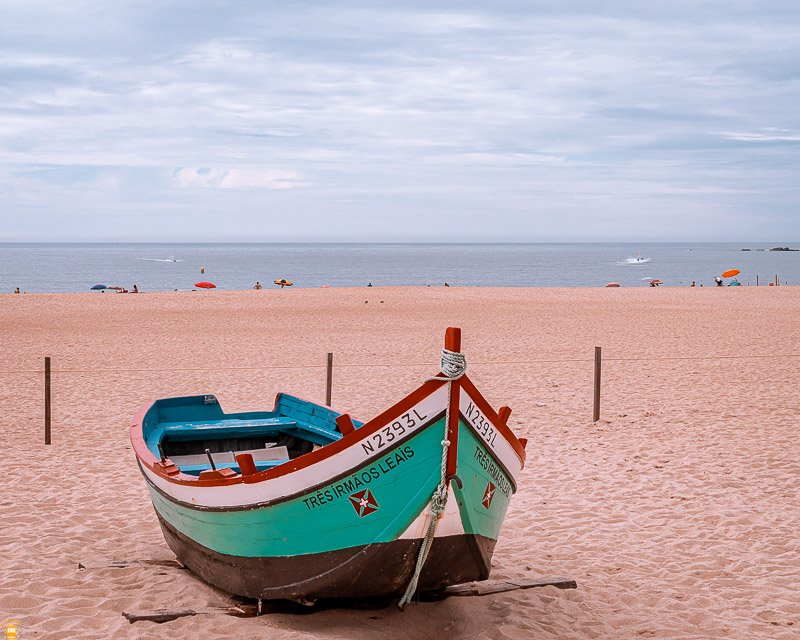
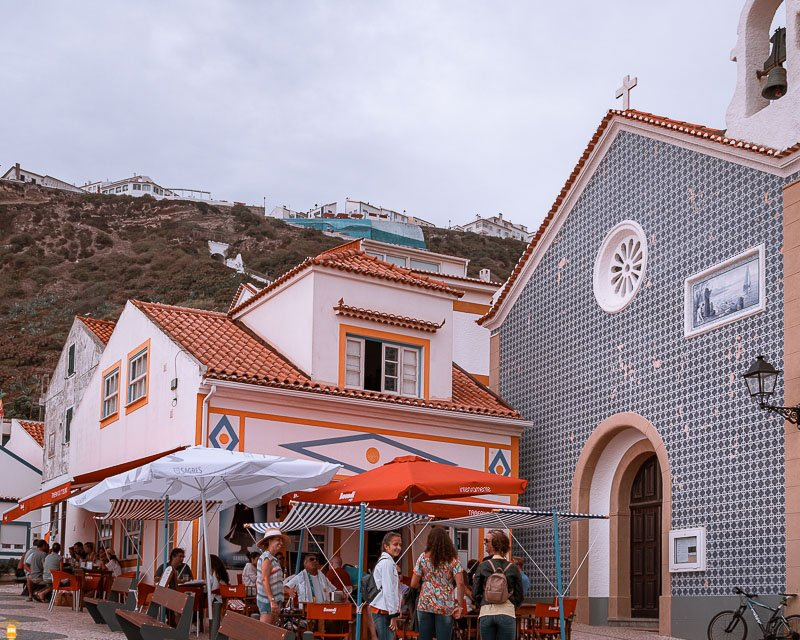
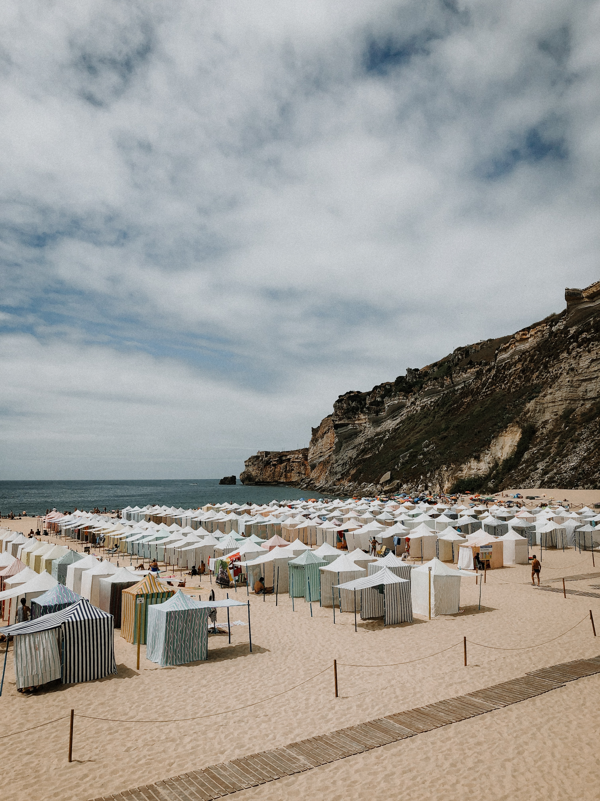
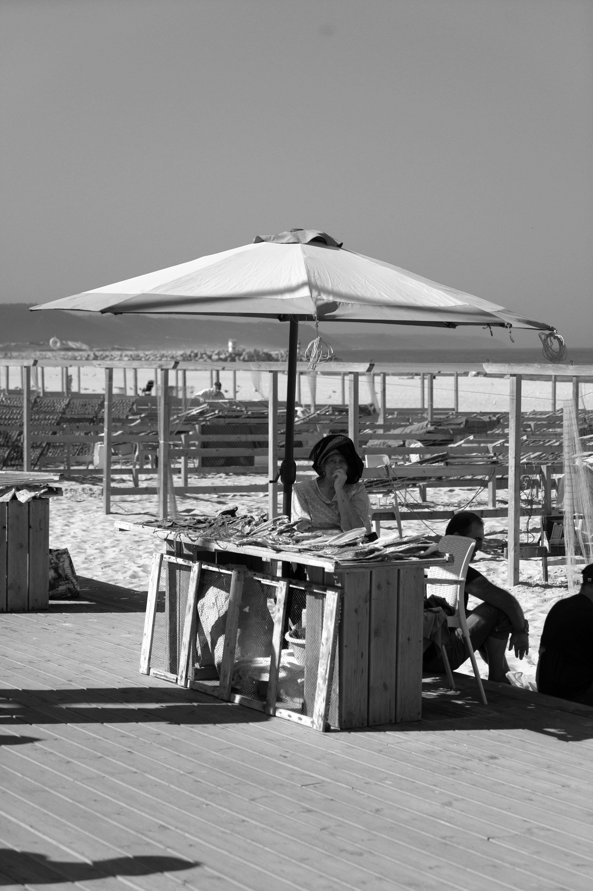
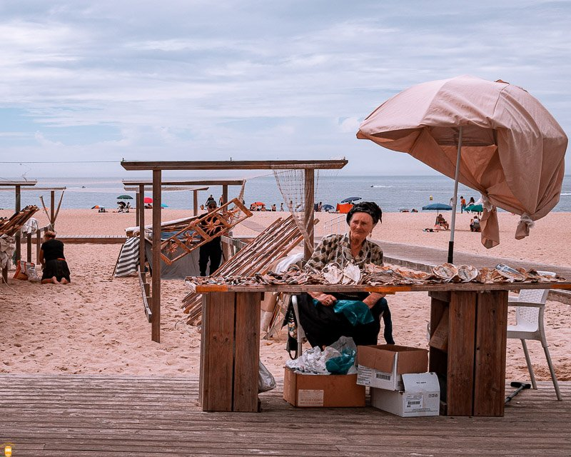
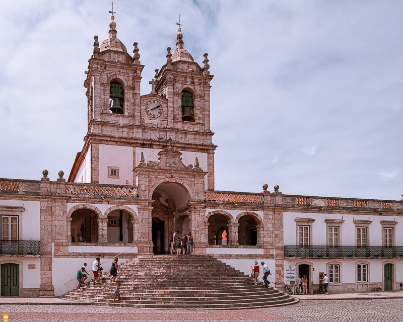
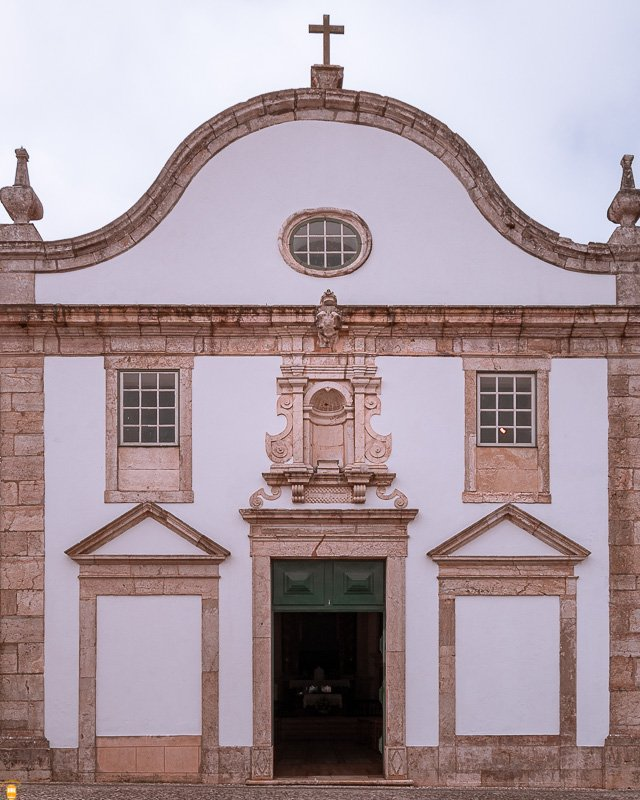
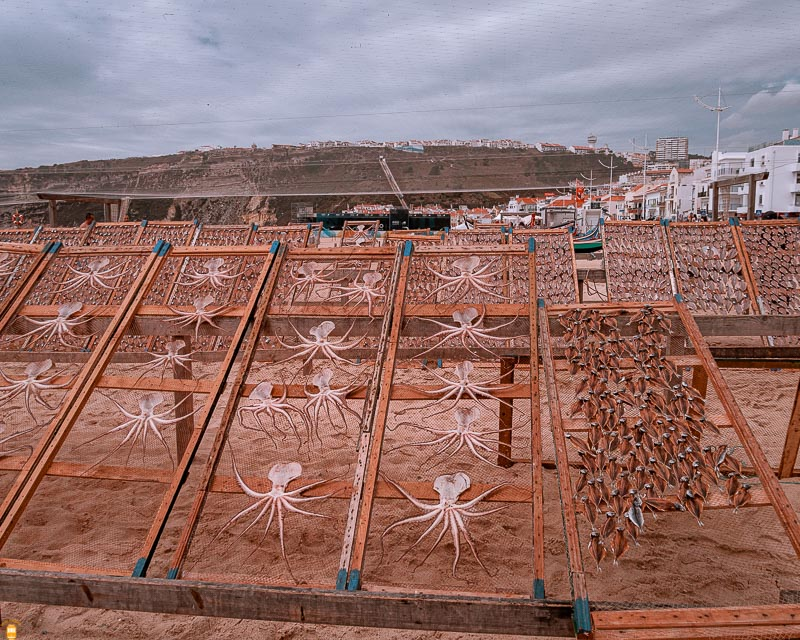

L'église "Matriz da Pederneira"

La place "Bastião Fernandes"

Le marché municipal

Les cabanes colorées

Poissonière sur son étal

Poissonière folklorique

Le sanctuaire de Nazaré

Le train pour aller au "Sitio"

La Chapelle "Santo António"

L'étal de poulpes séchés